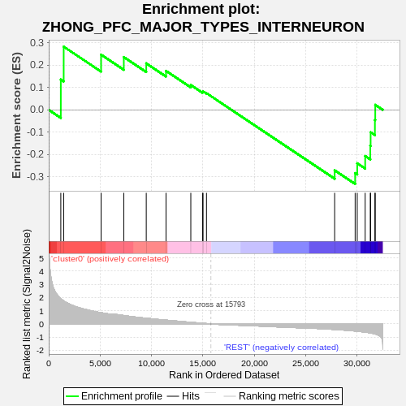
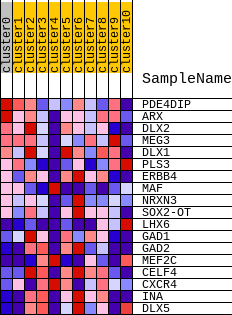
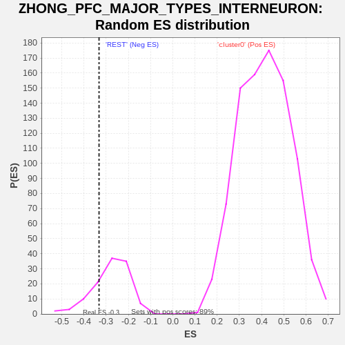

| | | Dataset | GTE_table.phenotypes_gte.cls#cluster0_versus_REST |
| Phenotype | phenotypes_gte.cls#cluster0_versus_REST |
| Upregulated in class | REST |
| GeneSet | ZHONG_PFC_MAJOR_TYPES_INTERNEURON |
| Enrichment Score (ES) | -0.33224064 |
| Normalized Enrichment Score (NES) | -1.1965312 |
| Nominal p-value | 0.1826087 |
| FDR q-value | 0.07424242 |
| FWER p-Value | 0.075 |
Table: GSEA Results Summary

Fig 1: Enrichment plot: ZHONG_PFC_MAJOR_TYPES_INTERNEURON
Profile of the Running ES Score & Positions of GeneSet Members on the Rank Ordered List
| SYMBOL | TITLE | RANK IN GENE LIST | RANK METRIC SCORE | RUNNING ES | CORE ENRICHMENT | | 1 | PDE4DIP | na | 1176 | 1.913 | 0.1359 | No |
| 2 | ARX | na | 1457 | 1.735 | 0.2833 | No |
| 3 | DLX2 | na | 5095 | 0.848 | 0.2476 | No |
| 4 | MEG3 | na | 7304 | 0.635 | 0.2368 | No |
| 5 | DLX1 | na | 9489 | 0.433 | 0.2085 | No |
| 6 | PLS3 | na | 11411 | 0.284 | 0.1749 | No |
| 7 | ERBB4 | na | 13823 | 0.118 | 0.1113 | No |
| 8 | MAF | na | 14965 | 0.047 | 0.0803 | No |
| 9 | NRXN3 | na | 15014 | 0.044 | 0.0828 | No |
| 10 | SOX2-OT | na | 15349 | 0.025 | 0.0748 | No |
| 11 | LHX6 | na | 27816 | -0.423 | -0.2709 | No |
| 12 | GAD1 | na | 29809 | -0.541 | -0.2835 | Yes |
| 13 | GAD2 | na | 30012 | -0.559 | -0.2395 | Yes |
| 14 | MEF2C | na | 30785 | -0.625 | -0.2070 | Yes |
| 15 | CELF4 | na | 31283 | -0.681 | -0.1611 | Yes |
| 16 | CXCR4 | na | 31316 | -0.686 | -0.1003 | Yes |
| 17 | INA | na | 31733 | -0.757 | -0.0451 | Yes |
| 18 | DLX5 | na | 31766 | -0.763 | 0.0226 | Yes |
Table: GSEA details [plain text format]

Fig 2: ZHONG_PFC_MAJOR_TYPES_INTERNEURON
Blue-Pink O' Gram in the Space of the Analyzed GeneSet

Fig 3: ZHONG_PFC_MAJOR_TYPES_INTERNEURON: Random ES distribution
Gene set null distribution of ES for ZHONG_PFC_MAJOR_TYPES_INTERNEURON